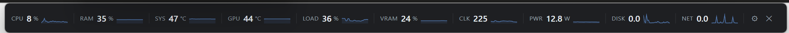
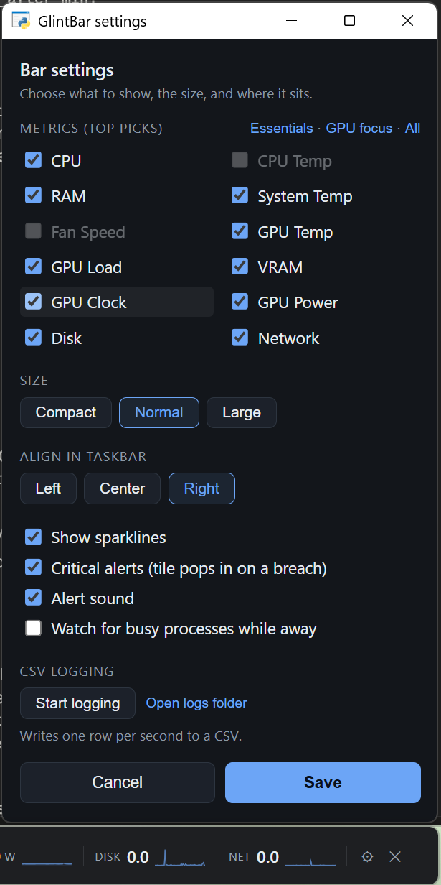

A live hardware monitor that sits in the empty gap of your Windows taskbar. No window to keep open, no screen space given up.
pip install glintbar glintbar

Up to twelve metrics, each with a 60-second sparkline, in space the taskbar wasn't using.
A single row of tiles, each with a value and a rolling 60-second sparkline. Hover any tile for a larger live graph with the session minimum, maximum and average.
| Tile | Source | Worth watching for |
|---|---|---|
| GPU temp | nvidia-smi | amber above 80 °C, red above 87 °C |
| GPU load | nvidia-smi / perf counters | sustained 100% |
| VRAM | nvidia-smi | red above 95% |
| GPU clock & power | nvidia-smi | a clock collapse mid-load is the fingerprint of a driver hang |
| System temp | ACPI thermal zone | red above 97 °C |
| CPU temp & fan | HWiNFO or LibreHardwareMonitor | real package temperature (needs one of those running) |
| CPU, RAM, disk, network | psutil | works on any Windows PC |
The middle of the Windows 11 taskbar is dead space. GlintBar fits itself to that gap, stays out of the way of your taskbar buttons, and yields entirely when the gap gets too narrow or a fullscreen app takes the screen.
Everything comes from sources that don't need elevation: the NVIDIA driver's own
nvidia-smi, Windows performance counters, the ACPI thermal zone, and
psutil. If you already run HWiNFO or LibreHardwareMonitor, it reads
real CPU package temperature and fan RPM from those too — locally, never over the
internet.
Distribution is source-first with no .exe. Corporate environments
block unsigned binaries, and plain Python is easy to audit. Releases are published
to PyPI through Trusted Publishing and signed with Sigstore.
Leave the machine and come back to a summary: how long it was actually busy, the typical and peak load, how hot it got, whether memory climbed and stayed up, and which processes used the CPU time.

Pick your tiles, size and alignment. Optional per-second CSV logging for offline analysis.
The only dependencies are pywebview and psutil, installed
for you. Configuration and logs live in %LOCALAPPDATA%\GlintBar, never
in the install directory.